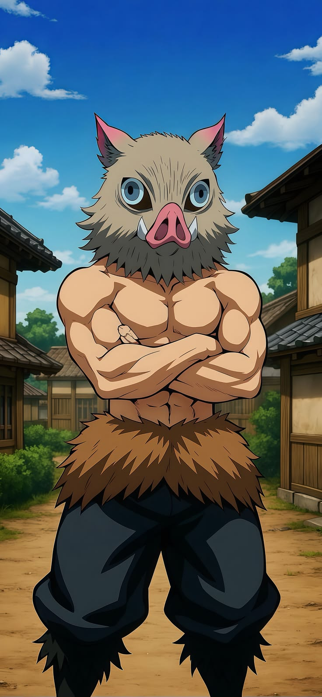

Inosuke Hashibira é um dos principais protagonistas de Demon Slayer: Kimetsu no Yaiba. Ele é um caçador de onis extremamente feroz e enérgico, famoso por usar sempre uma máscara de cabeça de javali e por lutar sem camisa.
poster de demon slayer.
tretagonisca agustula